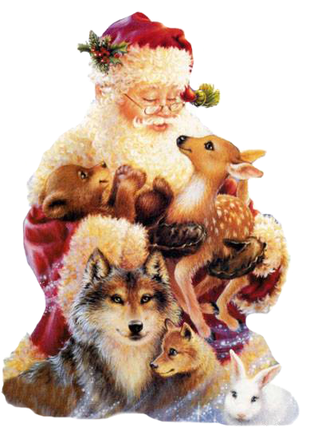

Администрация ДООЛ им. Талалушкина просит вас принять наши поздравления с Новым 2015 годом!!!

Под песни вьюги и метелиц
Мороз, волшебник и умелец,
Творит, рисует, льды мостит.
Зиме все рады, пусть гостит!
Пусть дарит праздник и румянец
Снежинок нежных лёгкий танец!
Пусть добрым будет Новый год,
Пусть сказкой в жизнь твою войдёт!
Пусть Новый год не будет грустным,
Светло и весело пройдёт!
Пусть сердце будет место чувствам,
Мечты влекут всегда вперёд!
Пусть счастье будет многогранным,
Достаток - в десять раз умножь!
Пусть всё, что было долгожданным,
Ты с наслажденьем обретёшь!